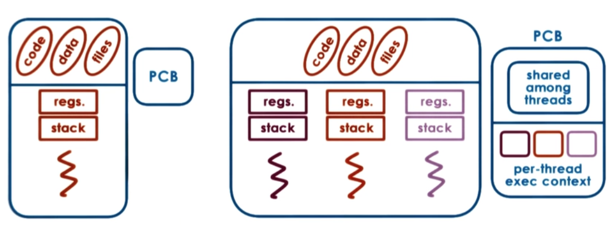
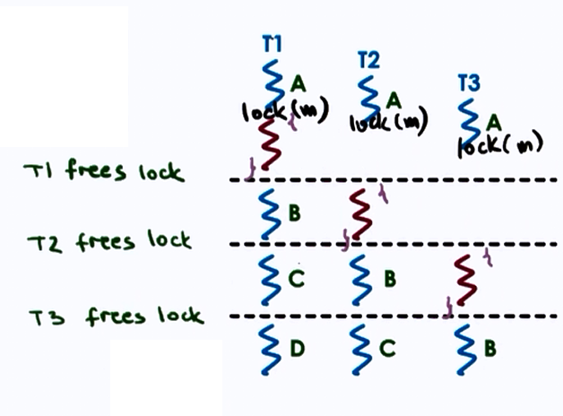
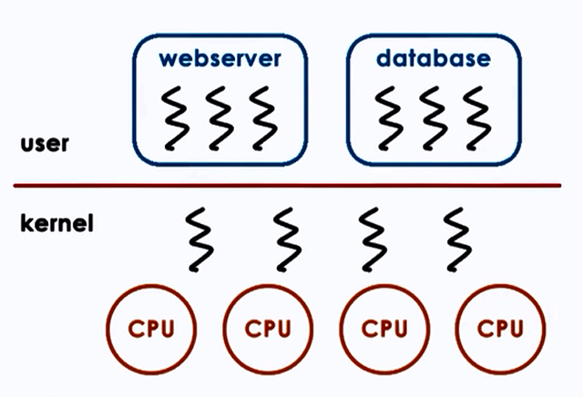
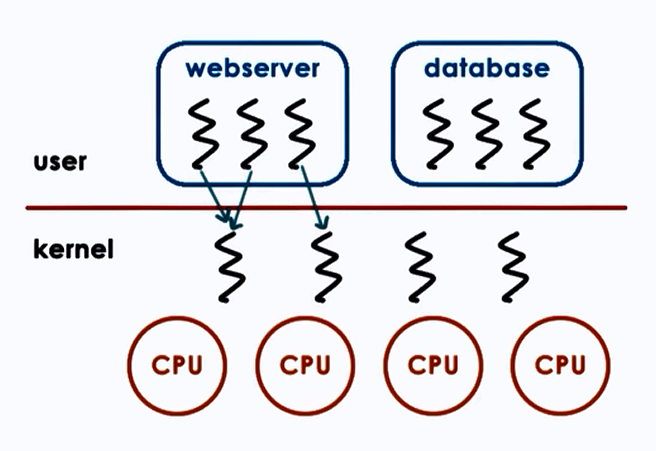
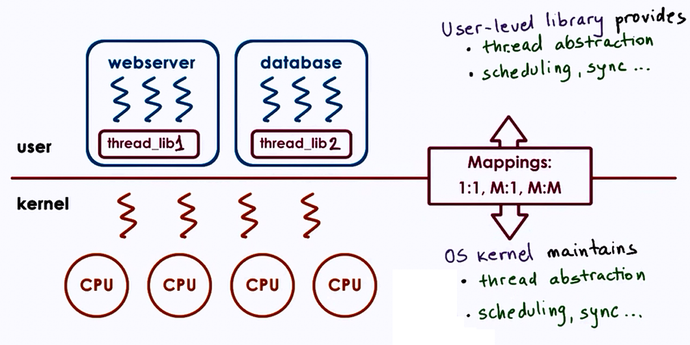
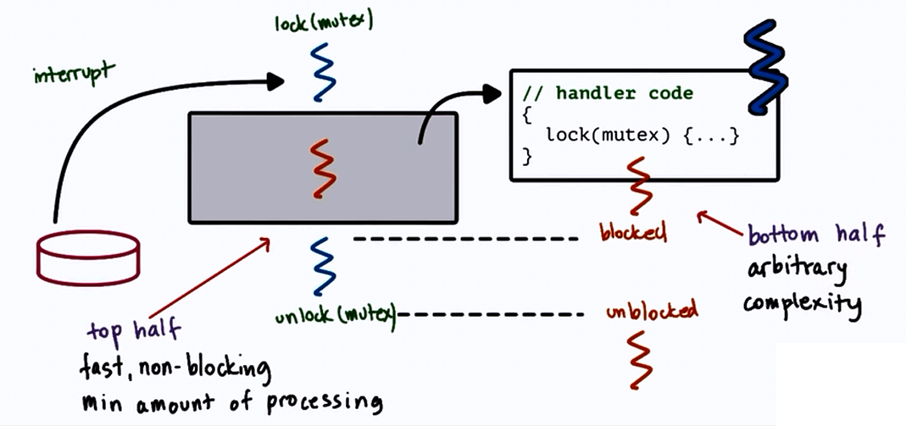

Threads and Concurrency
Thread:
- is an active
- entity executing unit of a process
- works simultaneously with others
- many threads execute together
- requires coordination
- sharing of I/O devices, CPUs, memory
Process vs Thread

Why are threads useful?
- Parallelization => Speedup
- Specialization => Hot cache
- Efficiency => lower memory requirement & cheaper IPC
- Time for context switch in threads is less, since memory is shared, hence mapping is not required between virtual and physical memory.
- Therefore multithreading can be used to hide latency.
- Benefits to both applicatioons and OS code
- Multithreaded OS kernel
- threads working on behalf of applications
- OS level services like daemons and drivers
- Multithreaded OS kernel
What do we need to support threads?
- Threads data structure
- Identify threads, keep track of resource usage..
- Mechanisms to create and manage threads
- Mechanisms to safely coordinate among threads running concurrently in the same address space
Concurrency control and Coordination
- Mutual exclusion
- Exclusive access to only one thread at a time
- mutex
- Waiting on other threads
- Specific condition before proceeding
- condition variable
- Waking up other threads from wait state
Threads and Threads creation
-
Thread data structure:
- Thread type, Thread ID, PC, SP, registers, stack, attributes.
-
Fork(proc, args)
- create a thread
- not UNIX fork
t1 = fork(proc, args)
- Join(thread)
- terminate a thread
child_result = join(t1)
Example:
Thread t1;
Shared_List list;
t1 = fork(safe_insert, 4);
safe_insert(6);
join(t1); //Optional
The list can be accessed by reading shared variable.
Mutual Exclusion
- Mutex data structure:
- locked?, owner, blocked_threads
lock(mutex){
//Critical Section
//Only one thread can access at a time
}
unlock(mutex)

Producer Consumer problem
What if the processing you wish to perform with mutual exclusion needs to occur under certai conditions?
For e.g. The producer appends items to a list until the list is full, and the consumer has to print out all the items of the list once the list if full and then empty the list. Thus we have to execute the Consumer thread only under a certain condition (here- when the list becomes empty, print items).
Solution: Use Condition Variables
-
Wait(mutex, condition)
- mutex is automatically released and reaquired on wait
- The consumer applies Wait until the list is full
-
Signal(condition)
- Notify only one thread waiting on condition
- The Producer applies Signal to the Consumer thread when the list is full
- Broadcast(condition)
- Notify all waiting threads

Readers / Writer problem
- 0 or more readers can access a resource
-
0 or 1 writer can write the resource concurrently at the same time
-
One solution:
- lock on resource
- good for writer
- too restrictive for readers
- lock on resource
-
Better solution:
if ((read_count == 0) & (read_count == 0))
R okay, W okay
if (read_count > 0)
R okay
if (read_count == 1)
R not-okay, W not-okay
State of shared resource:
- free : resource_counter = 0
- reading : resource_counter > 0
- writing : resource_counter = -1
Thus essentially we can apply mutex on the new proxy 'resource_counter' variable that represents the state of the shared resource.
Avoiding common mistakes
- keep track of mutex/lock variable used with a resource
- e.g. mutex_type m1; // mutex for file1
- check that you are always and correctly using lock and unlock - Compilers can be used as they generate errors/warnings to correct this type of mistake
- Use a single mutex to access a single resource
- check that you are signalling correct condition
- check that you are not using signal when broadcast is needed
- signal : only 1 thread is will proceed, remaining threads will wait
- check thread execution order to be controlled by signals to condition variables
Spurious(Unnecessary) Wake ups
When we wake up threads knowing they may not be able to proceed.
Deadlocks
Two or more competing threads are said to be in a deadlock if they are waiting on each other to complete, but none of them ever do.

Here T1 and T2 are in deadlock.
How to avoid this?
- Unlock T1 before locking T2
- Fine-grained locking but T1 nad T2 may both be required
- Use one mega lock, get all locks upfront, then release at end
- For some applications this may be ok. But generally its too restrictive and limits parallelism
- Maintain lock order
- first m_T1
- then m_T2
- this will prevent cycles in wait graph
A cycle in wait graph is necessary and sufficient for deadlock to occur.
(thread-waiting-on-resource ---edge---> thread-owning-resource)
-
Deadlock prevention => Expensive
Pre-check for cycles and then delay process or change code -
Deadlock Detection and Recovery => Rollback
Kernel vs User level Threads

Three types of models:
1. One to One model:

Advantages:
- OS sees threads
- Synchronization
- Blocking
Disadvantages:
- Must go to OS for all operations
- OS may have limits on policies, threads
- Portability
2. Many to One model:

Advantages:
- Totally Portable
- Doesn't depend on OS limits and policies
Disadvantages:
- OS may block entire process if one user-level thread blocks on I/O
3. Many to Many model:

Advantages:
- Best of both worlds
- Can have bound or unbound threads
Disadvantages:
- Requires coordination between user and kernel level thread managers
Multithreading patterns
1. Boss-Workers pattern
- Boss- assigns work
- Workers- perform entire task
Throughput of system is limited by boss thread. Hence boss thread must be kept efficient.
Throughput = 1/boss-time-orders
Boss assigns works by: 1. Directly signalling specific works - + workers don't need to sync - - boss must keep track of everyone 2. Placing work in queue - + boss doesn't neeed to know details about workers - - queue synchronization
How many workers? - on demand - pool of workers - static vs dynamic (i.e dynamically increasing size according to work)
Advantages:
- Simplicity
Disadvantages:
- Thread pool management
- Locality
1B. Boss-Workers pattern variant
- Here workers are specialized for certain tasks opposite to the previous equally created workers
Advantages: Better locality Quality of Service management
Disadvantages: * Load balancing
2. Pipeline pattern
- Threads assigned one subtask in the system
- Entire task = Pipeline of threads
- Multiple tasks concurrently run in the system, in different pipeline stages
- Throughput depends on weakest link
- Shared buffer based communication between stages
3. Layered pattern
- Layers of threads are assigned group of related subtasks
- End to end task must pass up and down through all layers
Advantages: Specialization Less fine-grained than pipeline
Disadvantages: Not suitable for all applications Synchronization
Example:
Q) For 6 step toy order application we have 2 solutions:
- Boss-workers solution
- Pipeline solution
Both have 6 threads. In the boss-workers solution, a worker produces a toy order in 120 ms. In the pipeline solution, each of 6 stages take 20 ms.
How long will it take for these solutions to complete 10 toy orders and 11 toy orders?
A) 6 threads means for Boss-workers, 1 thread is for boss, 5 for workers. In pipeline 6 threads are equally used.
For 10 toy orders:
Boss-workers(10) = 120 + 120 = 240 ms
Pipeline(10) = 120 + (9*20) = 300 ms
Here Boss-workers is better than Pipeline.
For 11 toy orders:
Boss-workers(11) = 120 + 120 + 120 = 360 ms
Pipeline(11) = 120 + (10*20) = 320 ms
Here Pipeline is better than Boss-workers.
This proves that choosing a better pattern depends on the number of threads and the work required to be done.
PThreads
PThreads == POSIX Threads
POSIX = Portable OS interface
Compiling PThreads
-
include
in main file - Compile source with -lpthread or -pthread
gcc -o main main.c -lpthread
gcc -o main main.c -pthread
- Check return values of common examples
PThread mutexes
- to solve mutual exclusion problems among concurrent threads
Safety tips
- Shared data should always be accessed through single mutex
- Mutex scope must be visible to all
- Globally order locks
- for all threads, lock mutexes in order
- Always unlock a mutex (correctly)
Thread Design Considerations
Kernel vs User Level Threads

Thread related data structures

Hard vs Light Process states
PCB is divided into multiple data structures classified as follows:
- Light Process states
- Signal mask
- System call args
- Heavy Process states
- virtual address mapping
Rationale for Multiple Data Structures:
| Single PCB | Multiple DS |
|---|---|
| Large continuos DS | Smaller DS |
| Private for each entity | Easier to share |
| Saved and restored on each context switch | Save and Restore only what needs to change on context switch |
| Update for any changes | User lever library need to only update portion of the state |
- Thus the following disadvantages for single PCB become advantages for Multiple DS :
- Scalability
- Overheads
- Performance
- Flexibility
Comparison of Interrupts and Signals
-
Handled in specific ways - interrupt and signal handlers
- Can be ignored
- interrupt and signal mask
- Expected or unexpected
- appear synchronously or asynchronously
- Can be ignored
-
Difference:
| Interrupts | Signals |
|---|---|
| Events generated externally by components other than CPU (I/O devices, timers, other CPUs) | Events triggered by CPU and software running on it |
| Determined based on physical platform | Determined based on OS |
| Appear asynchronously | Appear synchronously or asynchronously |
- Similarities:
- Have a unique ID depending on h/w or OS
- Can be masked and disabled/suspended via corresponding mask
- per-CPU interrupt mask, preprocess signal mask
- if enabled, trigger corresponding to handler
- interrupt handler set for entire system by OS
- signal handler set on per process basis by process
An interrupt is like a snowstorm alarm
A signal is like a low battery warning
Interrupts

Signals

Handlers / Actions
- Default actions
- Terminate, ignore
- Terminate and core dump
- Stop or continue
- Process Installs Handler
- signal(), sigaction()
- for most signals, some cannot be "caught"
- Synchronous
- SIGSEGV (access to protected memory)
- SIGFPE (divided by zero)
- SIGKILL (kill, id)
- can be directed to a specific thread
- Asynchronous*
- SIGKILL (kill)
- SIGALARM
Why disable Interrupts or Signals

Here PC: First instruction in handler
SP : thread stack
To prevent deadlock,
- Keep handler code simple
- avoid mutex
- - too restrictive
- Control interruptions by handler code
- Use interrupt/signal masks
- 0011100110.. (0: disabled, 1: enabled)
clear_field_in_mask(mask)
lock(mutex)
{
#disabled => remaining pending
}
unlock(mutex)
reset_field_in_mask(mask)
#enabled => execute handler code
-
Interrupt masks are per CPU
- if mask disables interrupt, hardware interrupt rounting mechanism will not deliver interrupt
-
Signal are per execution context (User-level thread on top of Kernel-level thread)
- if mask disables signal, kernel sees mask and will not interrupt corresponding thread
Types of Signals
- One-shot Signals
- "n signals pending == 1 signal pending" : atleast once
- must be explicitly re-enabled
- Realtime Signals
- "if n signals raised, then handler is called n times"
Handling interrupts as threads

but dynamic thread creation is expensive!
- Dynamic decision
- if handler doesn't lock
- execute on interrupted threads stack
- if handler can block
- turn into real thread
- if handler doesn't lock
- Optimization
- pre-create and pre-initialize thread structure for interrupt routines
Threads and Signal Handling

Case 1 :
- User-Level-Thread mask = 1
- Kernel-Level-Thread mask = 1

Case 2 :
- User-Level-Thread mask = 0
- Kernel-Level-Thread mask = 1
- another User-Level-Thread mask = 1

Case 3 :
- User-Level-Thread mask = 0
- Kernel-Level-Thread mask = 1
- another User-Level-Thread mask = 1
- another Kernel-Level-Thread mask = 1

Case 4 :
- User-Level-Thread mask = 0
- Kernel-Level-Thread mask = 1
- all User-Level-Thread mask = 0

Optimize common case
- signals less frequennt than signal mask updates
- system calls avoided
- cheaper to update user-level mask
- signal handling more expensive
Multi-processing vs Multi-threading
How to best provide concurrency?
Multi-Processing (MP)
Advantages
- Simple programming
Disadvantages
- High memory usage
- Costs context switch
- costly to maintain shared state (tricky port setup)
Multi-Threading (MP)
Advantages
- Shared address space
- Shared state (no sys calls to other threads)
- Cheap context switch
Disadvantages
- Complex implementation
- Requires synchronization
- Requires underlying support for threads
Event Driven model

Features:
- Single address space
- Single process
- Single thread of control
Dispatcher : acts as a state machine and accepts any external events
When call handler => jump to code
The handler:
- Runs to completion
- if they need to block
- initiate blocking operation and pass control to dispatch loop
Concurrent execution in Event-driven models
- MP & MT : 1 request per execution context (process/thread)
- Event Driven : Many requests interleaved in an execution context
- Single thread switches among processing of different requests
- Process requests until wait is necessary
- then switch to another request
Advantages
- Single address space
- Single flow of control
- Smaller memory requirement
- Event Driven model requires less memory than Boss-workers/Pipeline model, where the extra memory is required for helper thread for concurrent blocking I/O not for all concurrent requests.
- No context switches
- No synchronization
Disadvantages
- A blocking request/handler will block entire process
Asynchronous I/O operations
Asynchronous I/O operations fit well with Event-driven models
Since asynchronous calls are not easily avalible, helpers can be used to implement the async call functionality:
- designated for blocking I/O operations only
- pipe/socket based communication with event dispatcher
- select()/ poll() still okay
- helper blocks, but main event loop (& process) will not
Asymmetric Multi-Process Event Driven model (AMPED & AMTED)
Advantages
- Resolve portability limitations of basic event driven model
- Smaller footprint than regular worker thread
Disadvantages
- Applicability to certain classes of applications
- Event routing on multi CPU systems

- Core : basic server skeleton
- Modules : per functionality
- Flow of Control : Similar to Event Driven model
- But its an combination of MP + MT,
- each process = boss/worker with dynamic thread pool
- number of processes can also be dynamically adjusted